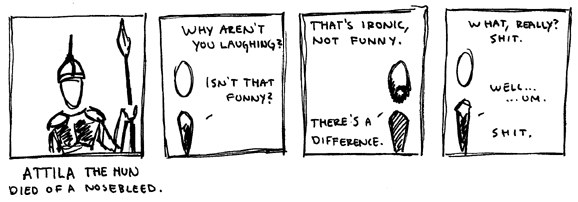

. . .
. . .
 . . . 7 . . .
. . . 7 . . .
 . . .
. . .

Attila of the Hun

33.3.2008
-----
...attila was probably just misunderstood. There's this story that, when he sacked a city, an old woman swallowed her pearls to save them. She told the huns, so as to keep herself alive until she passed them out. They promptly opened her stomach, and the stomachs of everyone else in the city. Clearly, Attila merely wanted to help people deal with digestive issues. As for this comic itself, I don't have much to say. I think irony is hilarious. I know there are others out there too. As for the rest, pearls before...
© 2008 Richard L.